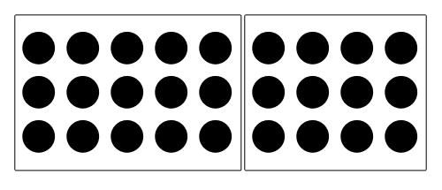
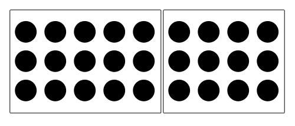

CSS Grid Layout
Tomek Wytrębowicz
@tomalecpl

tomalec

the only grid framework you need to know
The Grid
Gestalt
That's the way we perceive visual information
 


How we can do it?
<table>
- conceptually similar
- works!
- mixes content with styles
- layout is not a tabular data
- spacer gifs & co.
- table layout may be unpredictable
Monthy Pyton, video from youtu.be/YgYEuJ5u1K0
position: absolute;
- concerns separated! ..almost
- div-soup üçú
- hard to achieve
- taking responsibility for document flow
- fixed position are not very responsive
float: left | right;
- great to float an image
- job security
- hard to achieve
- hard to maintain
- clear fixes hell
- div-soup üçú
display: table;
display: table;
- concerns separated
- cheating ...
- all problems related to <table>, except separation
- no row-/colspans
Monthy Pyton, video from youtu.be/YgYEuJ5u1K0
display: flex;
- cool & fresh
- easy
- meaningful
- responsive
- cross-browser support
- single dimension
- requires nesting üçú
- no row-/colspans
CSS frameworks
- +∞ to choose from
- not your problem
- cheating...
same hacks = same problems - yet another class langauge to learn
- maintenance
- vendor locking
- mixability
- overhead
What is the right way?
#container {
display:
grid;
}
It works!
CSS Grid Layout
https://www.w3.org/TR/css-grid-1/
- no div-soup
- semantic HTML
- meaningful CSS
- responsive
- easy to maintain
- easy to replace
- no vendor locking
- no dependencies
- no glue code
The right way
<div class="container">
<div>Logo</div>
<div>Header</div>
<div>Nav</div>
<div>Main content</div>
</div>
CSS is finally aware of 2D layout concepts!
Example
Grid Lines
Grid Tracks
Rows
Grid Tracks
Columns
Grid Cells
Grid Areas
The code!
Grid container
<div class="container">
<div>A</div>
<div>B</div>
</div>
<div class="smth"></div>
Track sizing
<div class="container">
<div class="a">A</div>
<div class="b">B</div>
<div class="c">C</div>
<div class="d">D</div>
<div class="e">E</div>
</div>
Items placement
<div class="container">
<div class="a">A</div>
<div class="b">B</div>
<div class="c">C</div>
<div class="d">D</div>
<div class="e">E</div>
</div>
Numbers, numbers..
Do I really have to know the math?!
Named grid lines
<div class="container">
<div class="a">A</div>
<div class="b">B</div>
<div class="c">C</div>
<div class="d">D</div>
<div class="e">E</div>
</div>
Named areas
<div class="container">
<header>Header</header>
<nav>Nav</nav>
<div>Content</div>
<footer>Footer</footer>
</div>
Grid framework?
Write your own
Can I use it?
Production
source: caniuse.com/#feat=css-grid
Development
IE/Edge |
Prefixed with -ms |
Old spec/syntax, but quite stable |
Chromium |
⚑ behind the flagexperimental-web-platform-features |
Latest spec |
Firefox |
⚑ behind the flaglayout.css.grid.enabled |
|
Webkit |
Prefixed with -webkit |
Enabled in Webkit nightlies |
| Polyfill | github.com/FremyCompany/css-grid-polyfill | |
Learn and contribute
Place to start fiddling with it
Igalia's demos and examples - igalia.github.io/css-grid-layout/
Grid by example - gridbyexample.com/
Make the awesome happen!
Read and raport bugs in spec - w3.org/TR/css-grid-1/
Write browser tests - github.com/w3c/csswg-test
Take part in workshops - fantasai.inkedblade.net/style/events/grid-workshop
Thanks!
Tomek Wytrębowicz
tomalec
@tomalecpl
My other talks:
Specs:
CSS Grid Layout - w3.org/TR/css-grid-1/
CSS Flexbox Layout - w3.org/TR/css-flexbox-1/
Place to start fiddling with it
Igalia's demos and examples - igalia.github.io/css-grid-layout/
Grid by example - gridbyexample.com
Flexbox froggy - flexboxfroggy.com
CSS project:
CSS Houdini - JS meets CSS - wiki.css-houdini.org
GSS - CSS with constrain solver - gridstylesheets.org
Other:
CSS Grid workshops - fantasai.inkedblade.net/style/events/grid-workshop/
The guy who inspired me to make this talk - blogs.igalia.com/mrego/